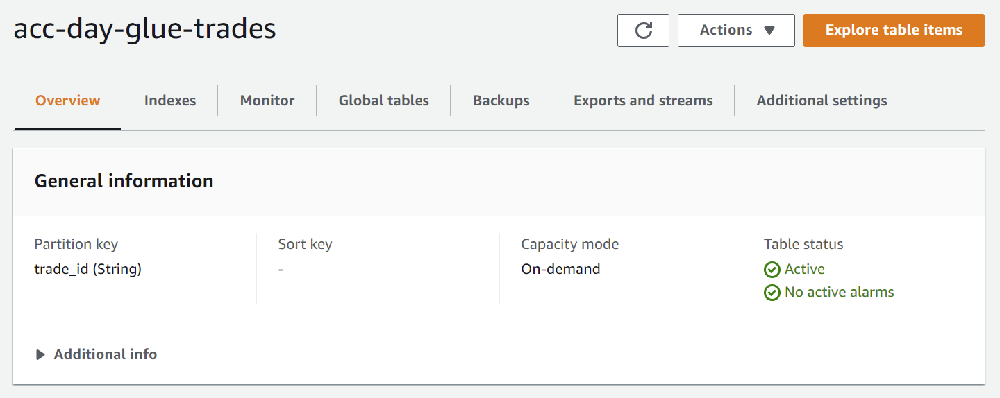
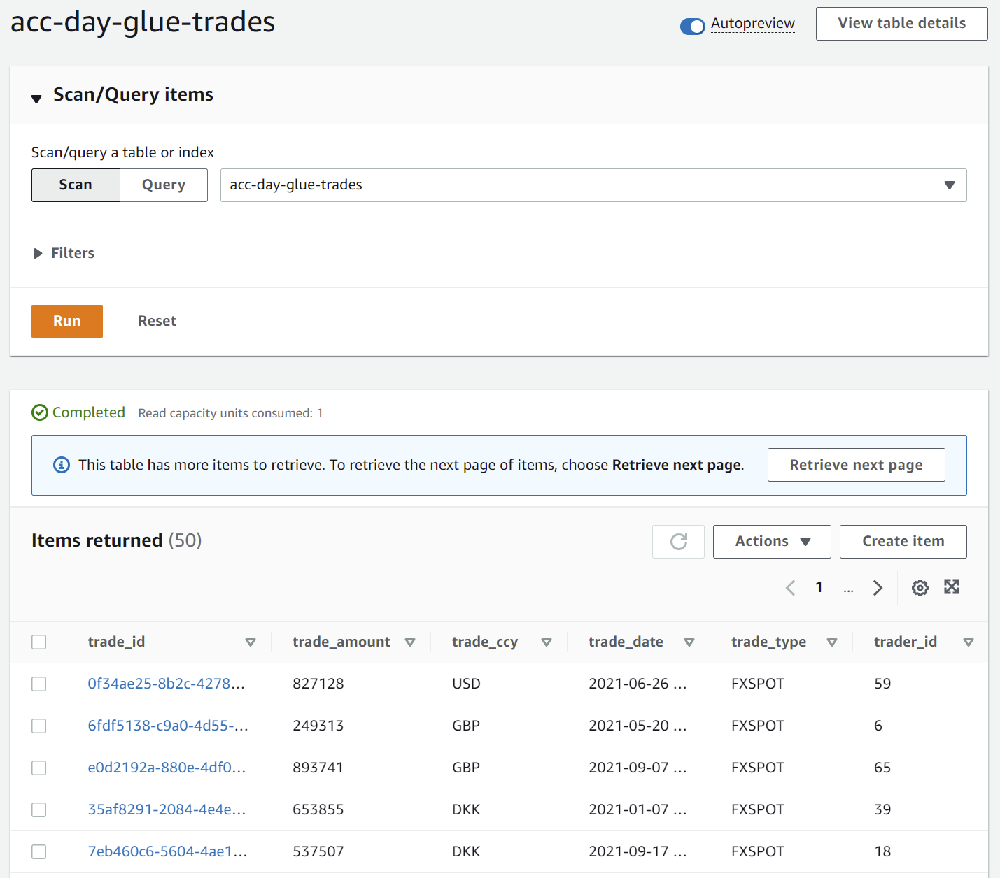
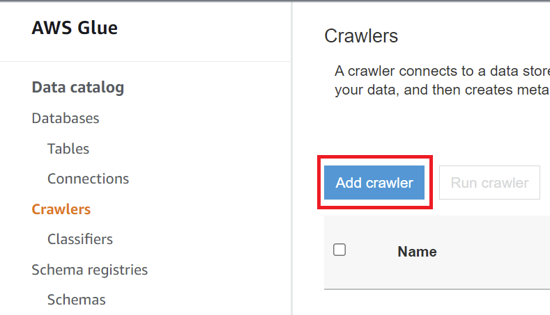
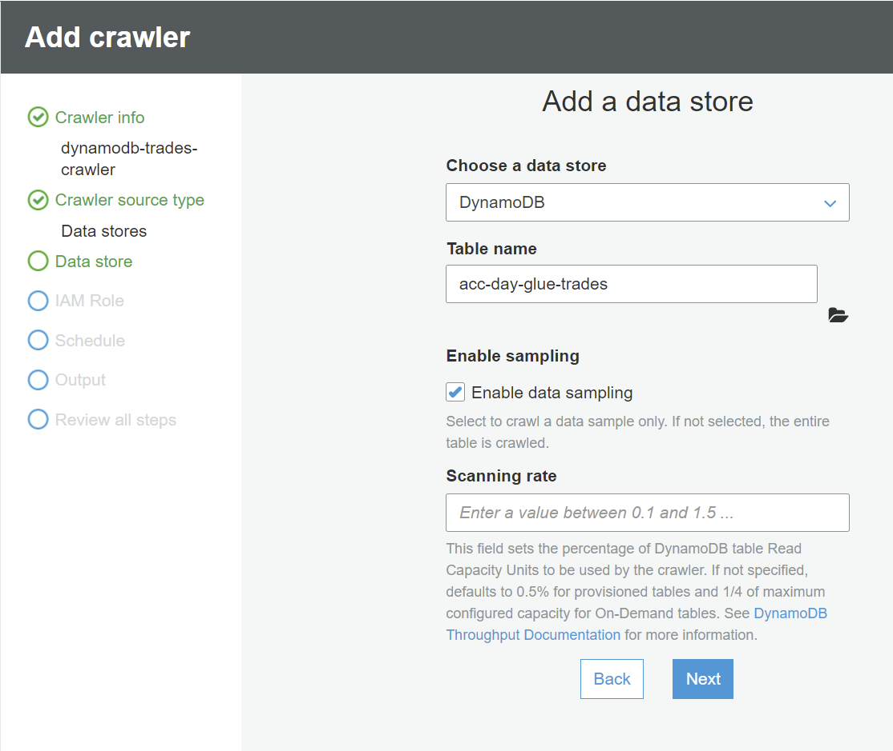
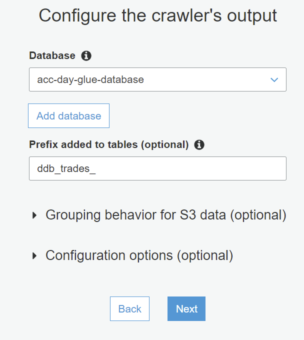
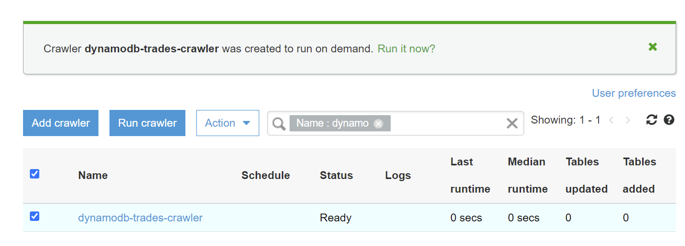
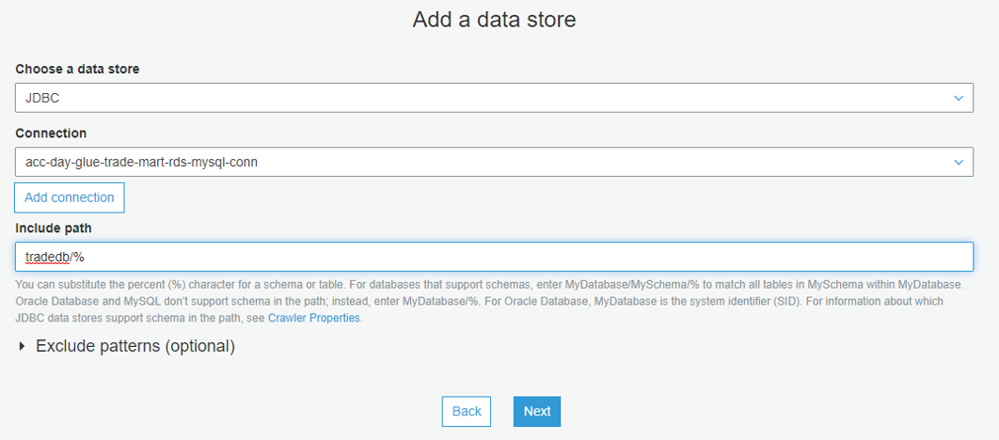

Prerequisites
If not already done, please complete the Getting Started lesson first. Next log in to AWS Cloud9. The Python code for all labs, and all infrastructure code, is available via the GitHub link that was cloned earlier. Run the code below in a Cloud9 terminal.
cdk deploy --all
You can roughly expect the following runtimes for the different stacks that are deployed as part of this process.
- Network Stack: 200 secs
- Security Stack: 30 secs
- Data Stack: 616 secs
- Compute Stack: 57 secs
Lab 0 - Setup
If not already done, start by logging in to AWS Cloud9. Next we will ensure that the AWS credentials used are the right ones. After that we will start to copy some sample data to their respective S3 buckets. First let us ensure that the credentials are correct.
aws sts get-caller-identity
If the 'Role' contains the phrase 'TeamRole' then you are using the right credentials. You can continue using by running the code below, otherwise go back to the Getting Started Guide.
export tradeInputBucket=[paste-bucket-name-from-above]
echo $tradeInputBucket
cd ~/environment/git/aws-glue/python/trade-import
python generate-large-data-file.py
python generate-huge-data-file.py
echo copying generated files to S3 locations...
aws s3 cp ~/environment/git/aws-glue/sample-data/trade/fx-trades.json s3://$tradeInputBucket/
aws s3 cp ~/environment/git/aws-glue/sample-data/trade/fx-trades.csv s3://$tradeInputBucket/
aws s3 cp ~/environment/git/aws-glue/sample-data/trade/fx-trades-large.csv s3://$tradeInputBucket/
aws s3 cp ~/environment/git/aws-glue/sample-data/trade/fx-trades-huge.csv s3://$tradeInputBucket/
aws s3 ls | grep driver
export driverBucket=[paste-bucket-name-from-above]
echo $driverBucket
echo downloading mysql jdbc driver...
cd /tmp/
wget https://repo1.maven.org/maven2/mysql/mysql-connector-java/8.0.25/mysql-connector-java-8.0.25.jar
echo copying jdbc driver to s3...
aws s3 cp mysql-connector-java-8.0.25.jar s3://$driverBucket/
echo done.
Once all files have been copied to S3, verify that the files are in the buckets using either the AWS CLI or the Amazon S3 Console.
Lab 1 - Creating a basic job
In this lab we will be running an "Empty" boilerplate job just with context and logging defined in the Python script. The job is already created for you by the CDK deployment that you run earlier. You can view and run it either via the AWS Glue Console or the AWS CLI using Cloud9.
Try both to get a feeling of the pros and cons.
aws glue start-job-run --job-name acc-day-glue-lab1
aws glue get-job-runs --job-name acc-day-glue-lab1 --output table
Note the output logs in Amazon CloudWatch as well as the timings for the run.
Lab 2 - Read secret from AWS Secrets Manager
In this second lab we will be reading a database secret from AWS Secrets Manager. Navigate to AWS Secrets Manager to view the secret as well as the secret values.
Run the job using the AWS Glue Console or using the AWS CLI as shown below.
aws glue get-job-runs --job-name acc-day-glue-lab2 --output table
Once the job has completed, open Amazon CloudWatch and note that we are printing out the entire secret. This is obviously only viable for a temporary demo environment, and not something you would do in your own envionments. If the values are displayed correctly, we know that the the job has been configured correctly and that we have the right permissions defined for the execution role used.
Lab 3 - Read CSV data from Amazon S3
Now that we have the basics in place, we will actually start to read data from an S3 object store. AWS Glue has the concept of DynamicFrames which is a more dynamic version of the more well known Python DataFrames. In most cases, reading data in to a DynamicFrame will be the first actual step in any Glue ETL job.
Run the job using the AWS Glue Console or using the AWS CLI as shown below.
aws glue get-job-runs --job-name acc-day-glue-lab3 --output table
Once the job has completed, open Amazon CloudWatch and note that we are printing out the contents of the data frame. This confirms that data is read correctly from the S3 bucket. Note that we are printing both the Glue dynamic frame, which will be printed as JSON and the converted Python data frame that will be printed as table text.
Lab 4 - Trim data in source data frame
Often source data comes in all shapes and sizes and can be filled with unexpected characters, whitespaces and much more. In the previous lab, did you notice some potential issues with the input file? Actually there were whitespaces in front of most of the values, which would cause problems as part of the type conversion process. You can verify this by looking at the JSON print out in Amazon CloudWatch. In this lab we will make sure that all whitespaces are trimmed.
Run the job using the AWS Glue Console or using the AWS CLI as shown below.
aws glue get-job-runs --job-name acc-day-glue-lab4 --output table
Once the job has completed, open Amazon CloudWatch and note that again we are printing out the contents of the data frame. This time though we are printing out the trimmed frame as well. You should be able to see that the whitespace characters from the orignal frame are now gone.
Lab 5 - Apply mappings
After reading the data we want to map it to the target schema. This is done using the apply() method of the ApplyMapping class. The ApplyMapping class is one of the AWS Glue classes in the Transforms namespace. Feel free to investigate the other classes in this namespace when time allows.
Run the job using the AWS Glue Console or using the AWS CLI as shown below.
aws glue get-job-runs --job-name acc-day-glue-lab5 --output table
Once the job has completed, open Amazon CloudWatch and verify that it has successfully printed the 'done applying mapping rules.' line.
Lab 6 - Write to target Amazon RDS MySQL DB
So far we have been reading data from Amazon S3, and we have trimmed/prepared and mapped the data to the target database schema. In this lab we will actually be writing the data to the target data store. We will be writing to Amazon RDS for MySQL, which is a managed MySQL compatible relational database offering from AWS.
For performance reasons it may be a good idea to create a target table "trade" in the MySQL database. This will ensure that smaller 'varchar' columns are used over 'text' columns, and that a primary key is defined.
Run the job using the AWS Glue Console or using the AWS CLI as shown below.
aws glue get-job-runs --job-name acc-day-glue-lab6 --output table
Once the job has completed, connect to the MySQL database instance, using the MySQL CLI from Cloud9. Please ensure that you have configured the RDS security group to allow inbound connections from Cloud9 for the MySQL port.
Once the job has completed, connect to the MySQL database through the Cloud9 termnial. Make sure that the Secruity Group for Cloud9 has access on the MySQL port for the Security Group for MySQL. If you forget this, your connection attempt will time out. Run the code below to connect to the database.
Remember to replace the values with the right information for your database instance. You can find these using Secrets Manager.
The job will only insert a few records in this lab, so it is safe to select all contents from the table using the code below, in order to verify that the job works as excpected.
Lab 7 - Read JSON data from S3
Reading JSON data from S3 is very similar to reading CSV data. The main difference in the code is the format parameter of the fromOptions() method which changes value from csv to json. A few other csv specific options are removed, and a few are added. We will not be preparing or mapping the data to anything in this lab, but we will simply read the data and investigate the CloudWatch logs.
Run the job using the AWS Glue Console or using the AWS CLI as shown below.
aws glue get-job-runs --job-name acc-day-glue-lab7 --output table
Once the job has completed open Amazon CloudWatch and notice the output from the DynamicFrame that has been read.
Lab 8 - Import large data set
Often when dealing with ETL jobs you will be working with thousands or even millions of rows. AWS Glue has many features to support large data sets. In the coming labs we will be focusing on some of those features and capabilities. Some are AWS Glue specific and other are related to the Python and PySpark language and framework.
In this lab we will load 1M rows from a CSV file, and investigate the runtime metrics and logs produced by the job. This will give us an idea of the speed that you can expect from AWS Glue with the given settings. Also note the job details for the job, which specifies both the number of workers and the instance type used, being to of the most critical components when right sizing AWS Glue ETL jobs.
Run the job using the AWS Glue Console or using the AWS CLI as shown below.
aws glue get-job-runs --job-name acc-day-glue-lab8 --output table
Lab 9 - import huge data set (SKIP or let timeout)
Import large data set 20M+ rows.Will most likely timeout as is.
Try to modify table.
Add Cloud9 to RDS security group inbound rule.
mysql -h .rds.amazonaws.com -u xx -pXX tradedb
Lab 10 - Writing to Amazon Dynamodb
For decades most databases have been relational databases or so called RDBMS. For the past years many new types of databases has emerged, including NoSQL and KeyValuePair databases. The ability to scale horizontally, as vertical scaling has limits and can be hard to right size, and the struggle to keep relational database schemas up to date and in sync with code and APIs are some of the main reasons why these database types are becoming more and more popular. Write data to DynamoDB instead of MySQL
Run the job using the AWS Glue Console or using the AWS CLI as shown below.
aws glue get-job-runs --job-name acc-day-glue-lab10 --output table
Verify that the trades has been written successfully to Amazon DynamoDB. Navigate to the DynamoDB Console, and click "Explore Items".
 Lab 11 - Write large data sets to Amazon Dynamodb
In this lab we will be writing a larger data set to Amazon DynamoDB. As DynamoDB is a serverless NoSQL database it will automatically scale to optimize for increased database activity. This means that the database should not be the bottleneck in this scenario.
Run the job using the AWS Glue Console or using the AWS CLI as shown below.
aws glue get-job-runs --job-name acc-day-glue-lab11 --output table
After the job has completed, investigate the timings and logs in Amazon CloudWatch to get a better feeling of where time was spent during this run.
Lab 12 - Using multiple partitions
To optimize how we write to a data target, we can make use of paritions. Partitioning is a way of slicing your data in to logical groups, that can be handled separately or in parallel. By partitioning your data you can increase both read and write performance significantly. In this lab we will be focusing on write paritioning to speed up the database writes.
With our current data set we only have one partition. We will force our data set to have more partitions by reshuffling the data in the DynamicFrame. We will not be writing to any data store in this lab.
Run the job using the AWS Glue Console or using the AWS CLI as shown below.
aws glue get-job-runs --job-name acc-day-glue-lab12 --output table
Once the job has completed, investigate the number of partitions before and after the repartitioning in Amazon CloudWatch.
Lab 13 - Write large data sets to DynamoDB using partioning
Now that we have learned a way to parition our data, we will be loading data in to DynamoDB using multiple paritions. Multiple partitions will allow AWS Glue to run multiple workers in parallel and thus speed up the write process. We will be loading a fairly big data set of 1M rows. Start by running the job with the default of just 2 workers.
Run the job using the AWS Glue Console or using the AWS CLI as shown below.
aws glue get-job-runs --job-name acc-day-glue-lab13 --output table
Note the timings. Then up the number of workers to 6, on the job details tab. Run the job again and note the different timings. Feel free to play around with the number of workers and partitions if you have spare time.
Lab 14 - Create an AWS Glue Crawler for DynamoDB
For the next couple of labs, you will not be using a pre-created Glue job and script. Instead you will be using the AWS Console UI to complete these labs. This will give you a feel for how the UI experience is for Glue.
A crawler will crawl a given data source (i.e. DB, S3 bucket or similar). During the crawling it will identify the data schemas, as well as partitions, keys and other meta data. Create glue DB. In this lab we will be creating a Glue crawler for the DynamoDB table that we loaded trades to in a previous lab (lab 10).
Open the 'burger' menu on the left side. Navigate to 'Crawlers' and create a new crawler.
Choose DynamoDB as source, and choose the table 'acc-day-glue-trades'. Ignore the S3 crawl options and continue through the wizard with the 'DynamoDB' option.
Use the same IAM role as in previous labs. You can check the name on the Glue job details tab, if you have not noticed. Choose to run the crawler 'on demand'. As we have not yet created an AWS Glue database, we will need to create one to contain our table schemas. Create a Glue database named 'acc-day-glue-database' and choose to prefix tables with 'ddb_trades_' so that they can be identified easily.
Leave everything else as is. Finish the wizard. The crawler should now show on the list of crawlers page. Select the crawler and choose 'Run crawler' or click the 'Run it now' button inside the green banner. Wait for the crawler to complete the run. Click the '1' under the 'Tables added' column, and investigate the table meta data.
Lab 16 - Create an AWS Glue Crawler for MySQL
This time we will be creating a crawler for MySQL, which is a bit different from the crawler we just created for DynamoDB. When creating a crawler for MySQL, or any other relational database that has the concept of schemas and multiple tables, you can decide whether you want to crawl just a specific table, a specific schema or the entire database. In this lab we will be crawling the entire database as it has only one table for now. We will be adding two more tables before crawling the database.
Start by connecting to the MySQL database through the Cloud9 termnial. Make sure that the Secruity Group for Cloud9 has access on the MySQL port for the Security Group for MySQL, if you did not already do this in 'Lab6'. If you forget this, your connection attemp will time out. Run the code below to connect to the database. Remember to replace the values with the right information for your database instance. You can find these using Secrets Manager.
create table cpty (
cpty_id int PRIMARY KEY NOT NULL AUTO_INCREMENT,
short_name varchar(30),
full_name varchar(100),
external_id varchar(50),
region varchar(20)
);
insert into cpty values(null, 'COMP_A', 'COMPANY A', 'F-312331', 'EUROPE');
insert into cpty values(null, 'COMP_B', 'COMPANY B', 'IOA-90005', 'US');
insert into cpty values(null, 'COMP_F', 'COMPANY F', 'PLJJH-22-KRTT', 'AFRICA');
insert into cpty values(null, 'COMP_G', 'COMPANY G', 'F-222322', 'EUROPE');
create table counterparty (
counterpartyid int PRIMARY KEY NOT NULL AUTO_INCREMENT,
shortname varchar(30),
fullname varchar(100),
extid varchar(50)
);
Just like we did with the DynamoDB crawler, go through the AWS Glue Crawler wizard, but this time you will need to choose JDBC as the datastore. Also you will need to use the connection we created earlier, to reach MySQL as it runs inside a VPC, and you will need to choose the correct IAM Role and Security Group. See if you can figure it out yourself. Below is a screenshot that will guide you a bit. If you get stuck ask for help.
Once you complete the wizard, the crawler should will shot on the crawlers page. Select the crawler and choose 'Run crawler' or click the 'Run it now' button inside the green banner. Wait for the crawler to complete the run. Click the '2' under the 'Tables added' column, and investigate the table meta data. As we are crawling the entire database, Glue will find two tables as we added two more tables. The third table is not crawled as it has no data yet.
Lab 17 - Create a job using the UI
In this lab we will be investigating how to use the AWS Glue UI. We will create a job using the UI for transferring data from the source table 'cpty' to the target table 'counterparty'. The two tables were already created in the previous exercise.
In this exercise it is time to test some of the things you have learned so far. See if you can figure out how to create the job yourself using the UI.
Create a new Glue visual job using the wizard. Name your job 'acc-day-glue-lab17'.
As we will be working with bookmarks in the next lab, for this lab we will disable bookmarks. In the job settings tab, scroll down to 'Bookmarks' and choose the option 'Disable'. While on the settings tab also ensure that the number of workers are set to 2, timeout to 20 minutes, and retry attempts to 0. Scroll down to the advanced section and ensure that you add the "acc-day-glue-vpc-conn" as a connection. Without this your connection to the database will time out. Finally specify the role for the job being the "acc-day-glue-execution-role".
You will be using MySQL as both source and target, as they are already crawled both endpoints will already exist, and thus be known to Glue and the Glue UI. This means that you can choose them from the Glue database and table drop downs instead of specifying all the details again.
Also note that the column names in the two tables are not the same. You will need to make sure that the mapping takes care of this.
When you are done configuring the job, save it and run the job using the AWS Glue Console or using the AWS CLI as shown below.
aws glue get-job-runs --job-name acc-day-glue-lab17 --output table
At this point you can login to the MySQL database like we did previously in the Cloud9 terminal, if you are not still logged in. Both tables should now contain the same rows. Run the queries below to verify that the data transfer was successful.
select * from counterparty;
Lab 18 - Run a delta job using bookmarks (optional)
Bookmarks works differently depending on your source data store. In this lab we will investigating how to use bookmarks with a relation database as a source data store. In this lab you will be using the job that you created in the previous lab as a starting point. Start by cloning the job, you can do this directly using the UI. Rename the job to 'acc-day-glue-lab18'. Next change the bookmark settings in the job details tab to 'Enabled'. Run the new job and verify the contents of the target table has not changed. As we have defined primary keys for the tables, AWS Glue will use these to keep track of what has been transferred already.
Insert a few more rows in the source table. Use the MySQL terminal as you did previously and run the commands below.
insert into cpty values(null, 'COMP_X', 'COMPANY X', '00334-110I', 'ASIA');
Run the job using the AWS Glue Console or using the AWS CLI as shown below.
aws glue get-job-runs --job-name acc-day-glue-lab18 --output table
Verify the contents of the target database. It should now also contain the rows that we just added to the source table. This is a nice way to transfer data in chunks, meaning that you could choose to transfer data several times a day, daily, weekly or at any schedule that matches your usage pattern.
Lab 19 - Resetting bookmarks (optional)
In this final lab we will be testing the reset bookmark functionality. You have the option to reset bookmarks for a given job at any time. This will erase all track of progress for the Glue job. Try to reset the job in the previous lab. Run the job and notice what happens.
Congratulations, you made it through all the basic labs. Good work and please continue to do great things with AWS Glue.